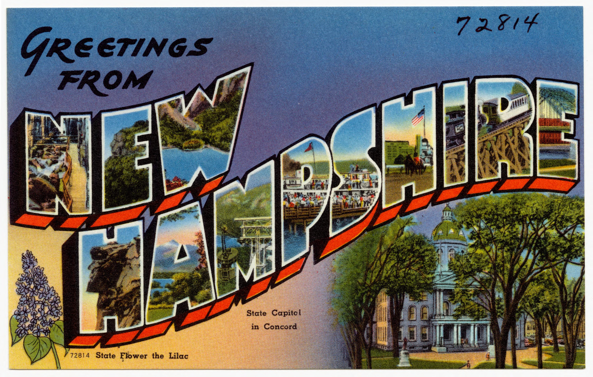

Amenities

Both our ceremony and reception will be at Dell Lea.
Located in Chichester, New Hampshire, Dell Lea is post and beam function
hall located on 236 private and picturesque acres. Spread amongst the property,
you can find beautiful stone walls, a custom-made gazebo, awaterfall, open fields,
ledge outcroppings, a country lane and several small ponds.